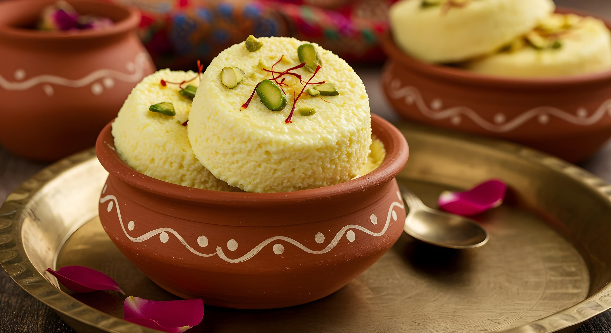

Food
website
Food that feeds the soul...
By Swizel De Melo & Veerpal Birdi

Falooda
Ingredients:
- Vermicelli or Sev
- Milk Ice Cream
- Sabja seeds
- Rose Syrup
- Jelly
Instructions
- Clean half tablespoon of falooda seeds and rinse them. Then add more water and soak. Soak them in half a cup of water.
- Soak them for about 20 minutes to 2 hours. They will swell up and absorb water. When you are ready to make the falooda, drain them to a tea strainer to get rid of excess water.
- There are different kinds of falooda sev; some need to be soaked in hot water and some require boiling for a minute. So follow the instructions on your pack. Then add half a cup of sev and cook until they are done for 2 mins. Follow the instructions on the pack for cooking time as it varies depending on the brand used. Once cooked, drain these and set aside.
- Add 2 to 3 tablespoons sugar to 1¾ cups of chilled milk.
- Stir it until dissolved.
- Add 1 tablespoon jelly (optional)
- Add 1 tablespoon of sabja seeds. Ensure there is no water in your sabja seeds.
- Add 2 to 3 tbsps of sev. Make sure there is no water in your sev.
- Pour 1 to 2 tablespoons of rose syrup.
- Next add in the chilled milk.
- Scoop off the ice cream and top it.
- Feel free to garnish the falooda with chopped pistachios or nuts, or even cherries.

Rasmalai
Ingredients:
- 12 rasgullas
- 1 tin milk maid condensed milk (392 grams)
- 2 cups milk
- 1/8 Tsp. Green cardamom powder / elaichi
- Few saffron strands
- Chopped Pistachios and almonds for garnish
Instructions
- You can use any ready made rasgulla. Squeeze the syrup out of the balls. Do not press them too hard, they will break. Make sure that the syrup is extracted from the balls else they will not absorb the milk. Set these aside.
- Pour milk and condensed milk in a pan and bring it to a boil.
- Add saffron and cardamom powder. Simmer it for around 5 to 6 mins so that the milk blends well with milkmaid. Alternately, You can melt the saffron in little hot milk and add too.
- Reduce the flame to medium. Add the rasgulla to the condensed milk.
- Cover with a lid and simmer for a min or two. Overcooking can break them.
- Easy rasmalai using rasgulla is ready in less than 10 minutes. Garnish with nuts. You could add the chopped nuts at step 4 too.